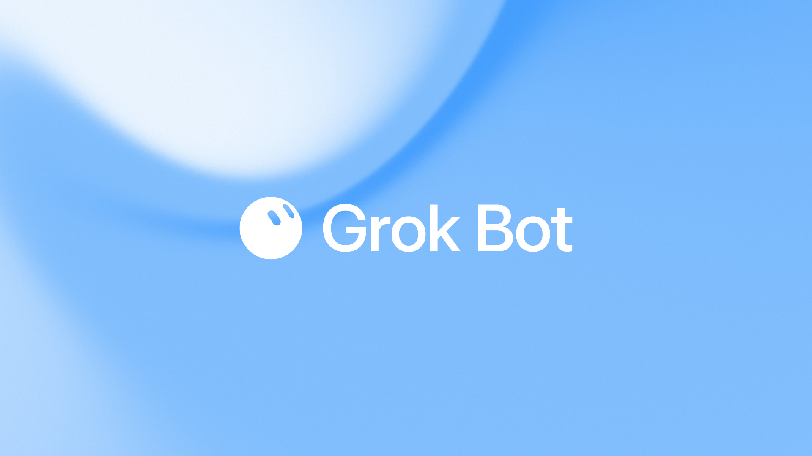
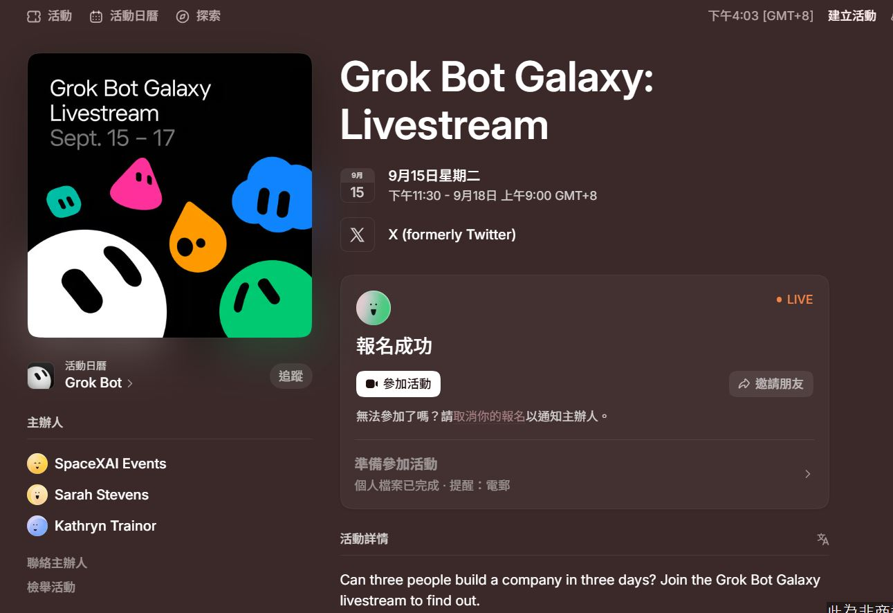

超人行銷｜Grok Bot「降價 90%」說法的官方查核：先確認產品、平台與權限邊界

一句話摘要
Grok Bot 的真正看點是「讓多個可持續工作的 agent 在各自電腦與工具內協作」，不是未經核對的月費數字；若要使用，應先查當前方案、支援平台、資料連接器與人工核准機制。
來源文章說了什麼
超人行銷於 2026-09-16 的文章稱 GrokBot 月費由 200–300 美元降至 20 美元，並稱可免費試用、透過 Cursor 訂閱，支援網頁瀏覽、檔案處理、Google Maps 潛在客戶擷取，以及 Gmail、Google Drive、Slack 連接。文章頁同時標示其內容由 AI 自動生成，且不保證完整性、準確性或即時性；因此這些描述應視為待驗證的二手說法。
官方可確認：Grok Bot 是長時間運行的 agent 團隊
xAI 在 2026-08-11 的官方發布頁將 Grok Bot 描述為「always-on agents」：各 agent 有自己的電腦、能在工具與應用程式中工作並持續運行。官方展示的內部情境包括：銷售 agent 更新 CRM 與草擬 follow-up、營運 agent 處理 Gmail 收到的發票與新人安排、工程 agent 重現 UI bug、建立 ticket 並交由 debugging agent 接手。
官方也強調可同時運行多個 Bots、讓其中一個協調其他專職 agent，以及隨信任程度逐步授權。這支持「多步驟工作流／跨工具操作」的產品方向，但不等於任何帳號都已取得所有整合、所有平台或全自動發布能力。
需要更正或保留的部分
- 價格：xAI pricing 頁在本次查核時遭 Cloudflare 阻擋，無法驗證 20 美元、原價 200–300 美元或「降價 90%」。
- 平台：官方發布頁的明確下載按鈕為「Download for macOS」；來源文章所稱 Cursor 與其安裝／訂閱流程沒有由此官方頁證實。
- 連接器：官方案例提到 Gmail、CRM、產品 UI 等工作脈絡，但 Gmail、Google Drive、Slack 是否對所有用戶與方案開放、各自權限範圍為何，都須以當前產品文件確認。
- 成本：agent 即使有固定訂閱，也可能存在使用額度、企業方案、外部 SaaS、雲端運算或人工審核成本；不應只以單一月費推估總成本。
導入建議：以權限分級取代全自動
- 先在隔離帳號與測試資料上做只讀研究、草稿與摘要。
- 從 CRM 更新、寄信、付款、檔案刪除等不可逆操作開始前，設人工核准與可追溯日誌。
- 為每一個 Gmail、Slack、Drive 或 CRM 連接器確認 OAuth scope、資料保存、撤銷方式與資料外送路徑。
- 將「多 Bot 並行」視為更需要管理的權限擴張，而不是單純提高速度。
社群補充：8 小時直播字幕的實測回報
Threads 使用者 bala5438bala5438 分享「Grok Bot Galaxy Livestream」第一天的非正式轉錄：他以「龍蝦」處理約 8 小時直播語音並產出原文字幕，翻譯尚未完成；他也表示 MiniMax 的兩段、各 5 小時額度在前 10 分鐘即耗盡。貼文稱活動期間可試用 Grok Bot，並在其帳號的 free tier 啟用後跑完這批字幕；作者同時提醒未校稿、未對正音軌。
這是有用的工作量觀測，不是官方 SLA 或免費額度承諾。長影音轉錄與翻譯會同時吃掉音訊理解、文字生成與翻譯 token；實作時請先以 5–10 分鐘片段實測，估算逐字稿品質、每小時成本、可平行數量與是否需人工校對，再擴大到整天直播。尤其不要將「活動期間可用」推論為未來長期 free tier 一定可用。

2026-09-19 社群補充：稱為「目前最好用」但未附可查證實測
GenAI & Agentic AI 論壇的 Facebook 公開預覽只有「體感目前最好用的 Agent 平台 -- Grok Bot」這一句與一張未含文字的通用機器人圖；未提供工作流、方案、價格、實測條件、來源連結或操作截圖。因此「目前最好用」應視為作者個人評價，不能推論成效能排行、官方承諾或適用所有任務。
這則貼文屬於前述 Grok Bot 條目的相關觀察，故併入同一篇累積記錄。它最能支持的結論是：Grok Bot 在 agent 社群有正面口碑；要判斷是否適合，仍應以自己的隔離帳號與可量測任務比較成功率、所需人工覆核、連接器授權範圍、延遲與總成本。
原始與官方來源
- Facebook 補充貼文：https://www.facebook.com/share/p/1UA1K1MyvE/?mibextid=wwXIfr
- Facebook canonical：https://www.facebook.com/groups/aigctw/posts/3394791077371447/?mibextid=wwXIfr
- 超人行銷原文：https://www.isuperman.tw/grokbot-%E5%83%B9%E6%A0%BC%E9%A9%9F%E9%99%8D90%EF%BC%8C%E5%A6%82%E4%BD%95%E6%9C%89%E6%95%88%E5%88%A9%E7%94%A8%E9%80%99%E9%A0%85%E5%B7%A5%E5%85%B7/
- Threads 實測分享：https://www.threads.com/share/BAWmIdB8lP/
- Threads canonical：https://www.threads.com/@bala5438bala5438/post/DdV1einEkpE
- xAI 官方發布：https://x.ai/news/introducing-grok-bot
- xAI Pricing（本次受 Cloudflare 阻擋，需於購買前重查）：https://x.ai/pricing